Combat robotics · EXD
DreamSiccle.
A 1-lb horizontal spinner that competed in 7+ tournaments across Texas.
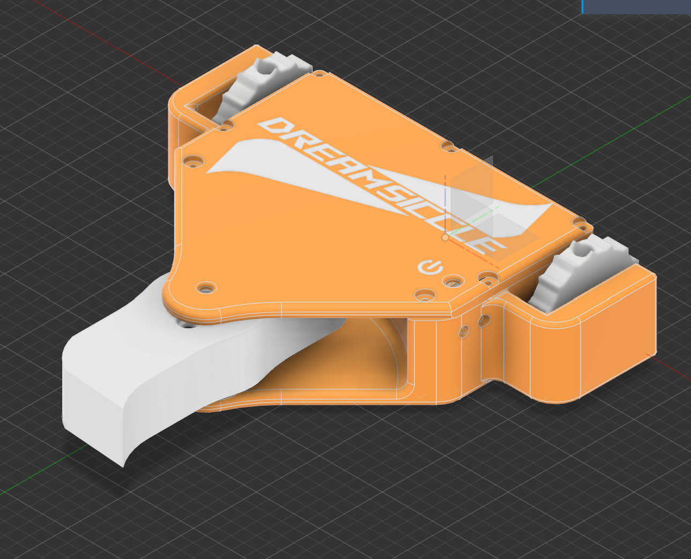
Experimental Division for Combat Robotics · 1-lb class · Horizontal spinner
The robot
DreamSiccle is a 1-lb horizontal-spinner combat robot. As combat robotics engineer, I design, fabricate, assemble, and compete with the robot, getting some awesome hits in.
Design gallery
The CAD views show the chassis and weapon layout used during the design process.
Evolution of the design
DreamSiccle was iterated in three major versions, each one addressing the weak points from the previous build. The progression was driven by a simple goal: improve survivability without sacrificing weapon performance.
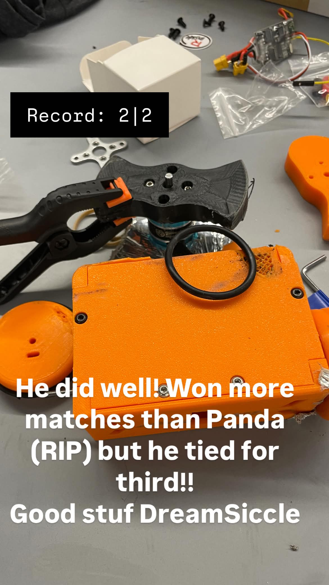
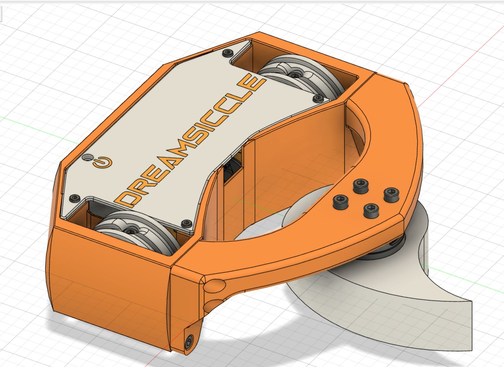
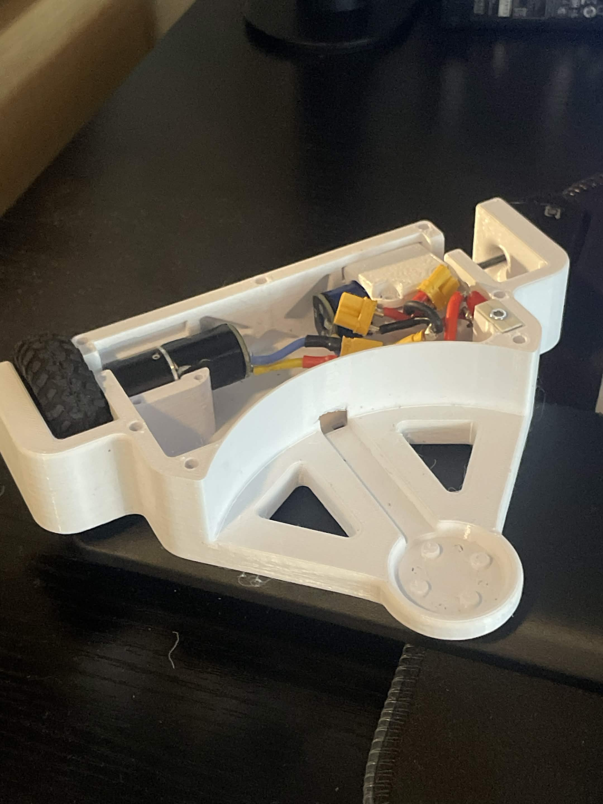
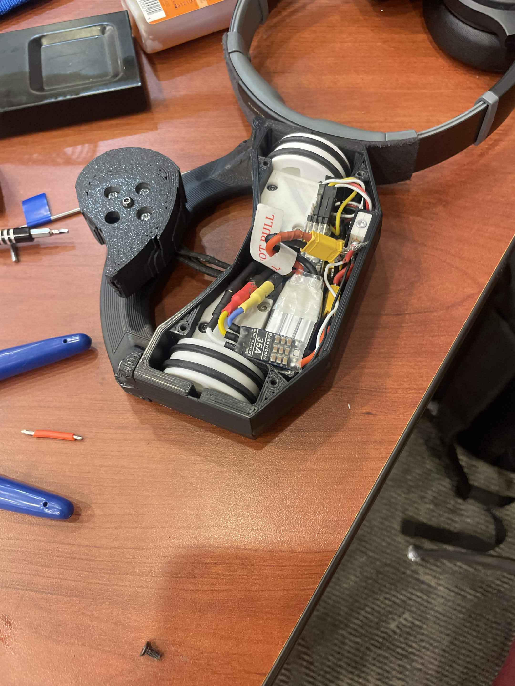
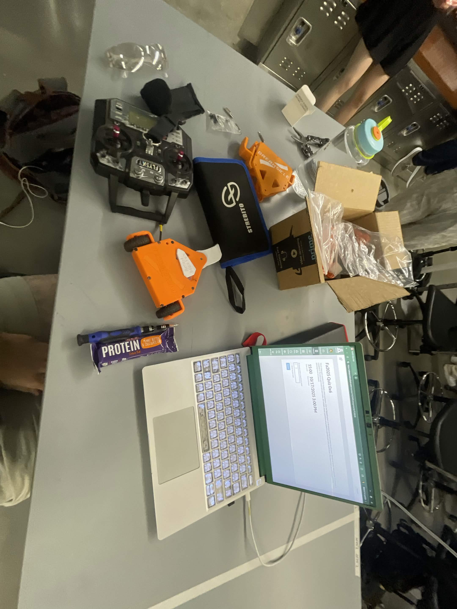
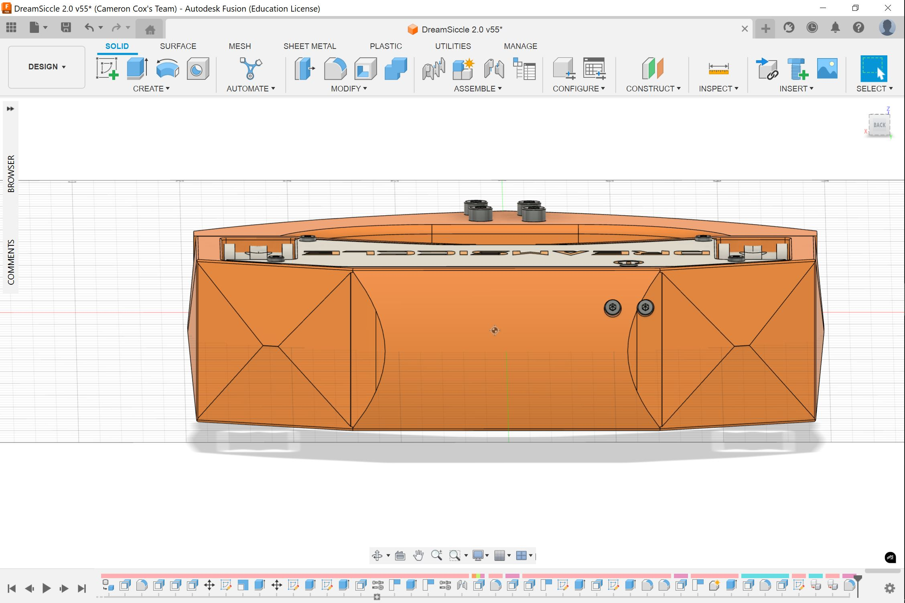
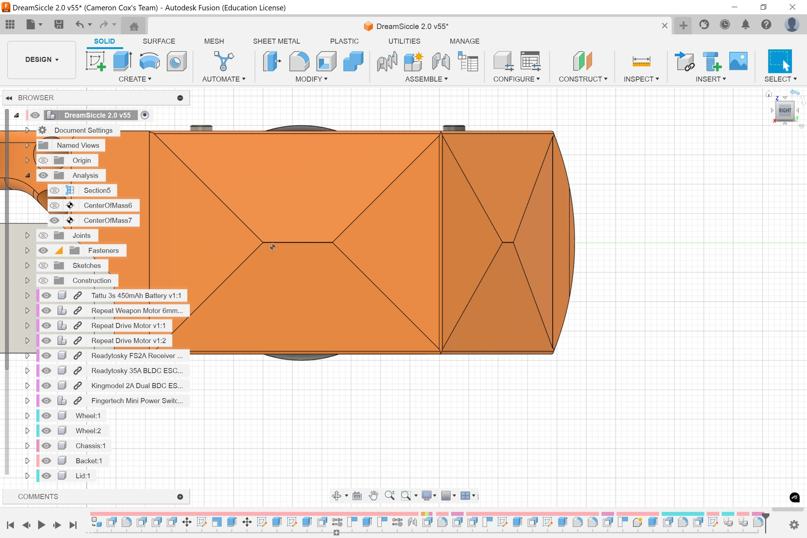
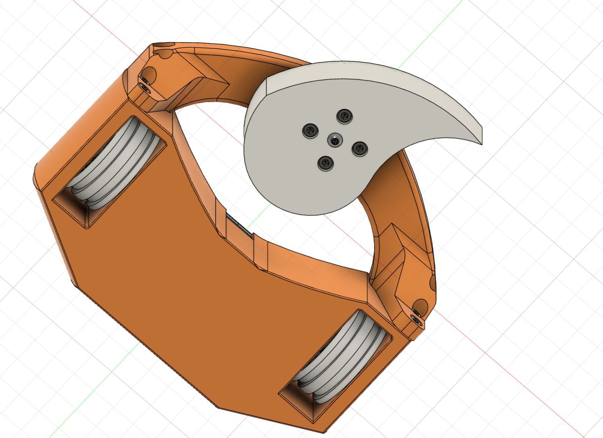
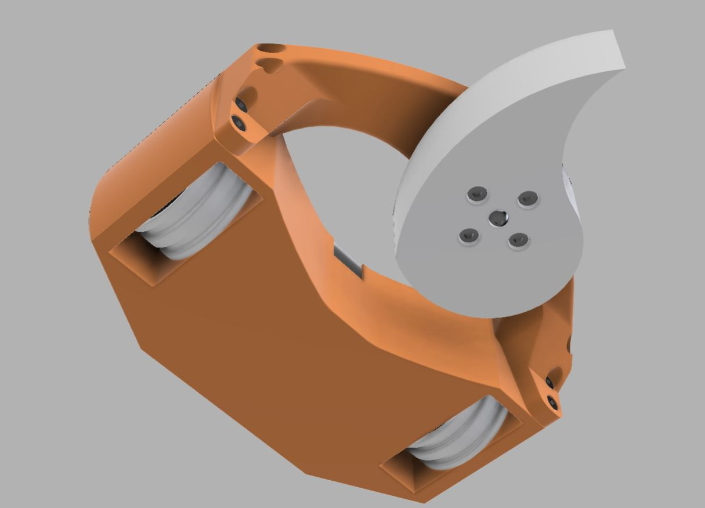
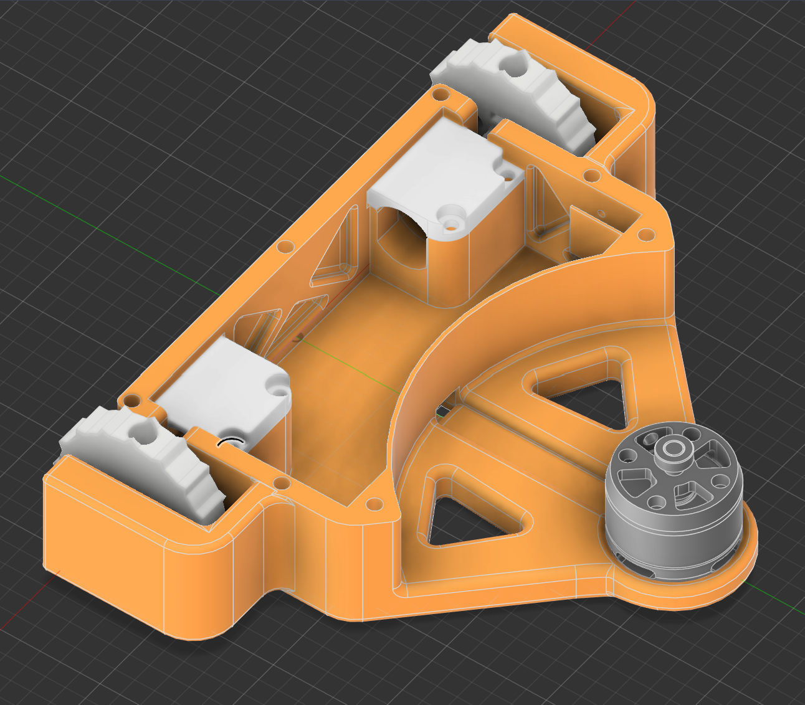
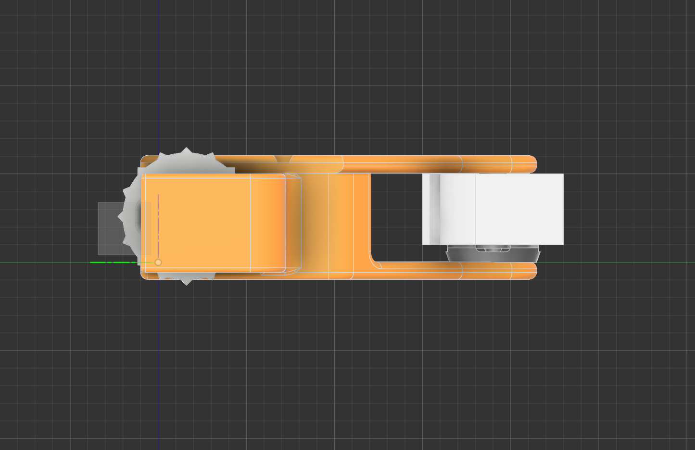
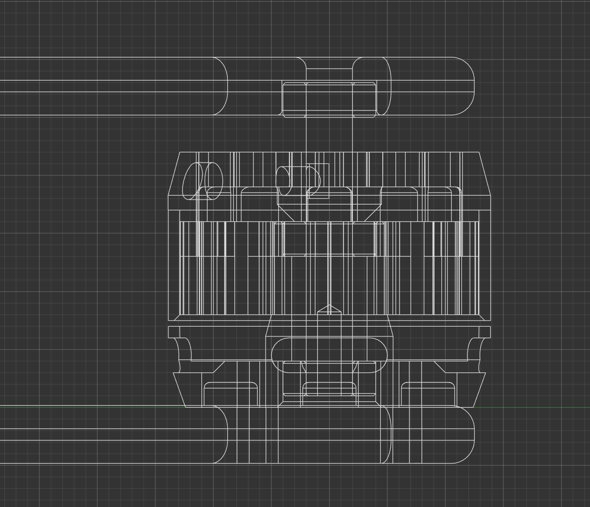
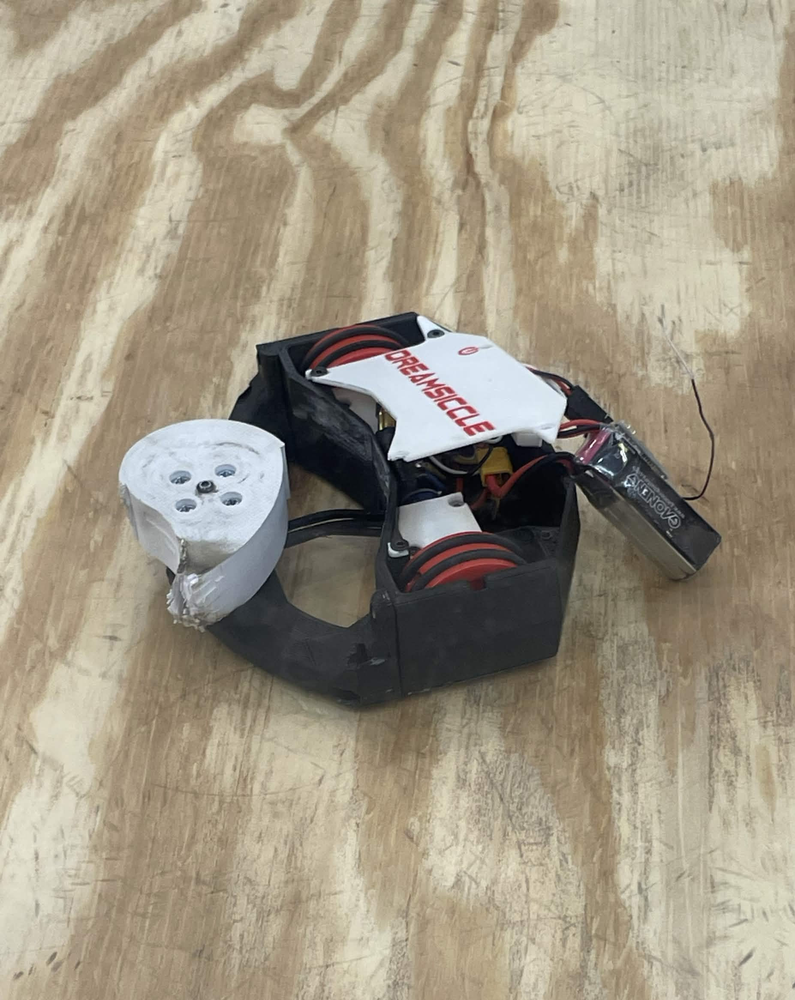
Version 0.5
The first build was a prototype to get into the sport, but the weapon and chassis were still too flexible under impact. With exposed wheels and a small weapon, weapon contact was inconsistent, and the robot was vulnerable to damage from repeated hits. It proved the concept, but not yet the durability or reliability needed for a full competitive run.
Version 1.0
The first major revision focused on improving durability and weapon consistency. The wheels were protected, the weapon geometry was refined, and the system was better balanced to maintain cleaner contact with opponents. This increased the robot's ability to deliver effective hits while surviving more punishment between repairs.
Version 2.0
The final revision pushed the design toward survivability, repairability, and better operator efficiency. Wheel protection was reduced to allow for weapon support on both sides of the motor. The weapon was rebalanced for more stable performance, and the layout made it easier to replace damaged parts after each fight. The result was a more robust robot that could absorb hits, keep weapon contact more consistently, and be restored quickly between matches.